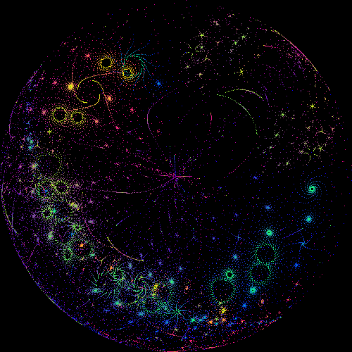
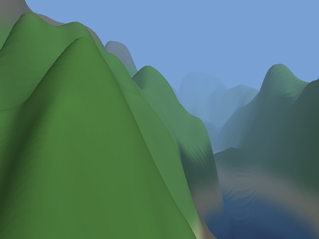

SedaiBasic
Three demos, written in BASIC
Each one is a single source file compiled four ways — to bytecode, to machine code while it runs, to machine code before it starts, and to WebAssembly. The WebAssembly builds are below: they run in the browser with nothing to install, and each draws the same picture its native build draws, byte for byte.

Buddhabrot
Where do the escaping orbits go on their way out? Millions of random points, a density map, and a figure that emerges out of noise. Tap it to zoom.

Bubble Universe
62,500 points a frame, each placed by a pair of phasors fed back from the point before it. Nothing is stored between frames; the sense of a turning volume is in the phase alone.

Voxel Landscape
No polygons, no depth buffer. A heightmap drawn one column at a time, front to back, with an occlusion line that only ever rises — two nested loops and a comparison.
What they have in common
Each demo is one source file. What differs between the browser build and the native one is compiled out with a preprocessor branch — the file writer, the screen lock, the on-screen counters, the loop that would otherwise never hand the tab back — and nothing that decides a pixel is among it.
That they really are the same thing is a check, not a claim: for each demo the module's framebuffer is compared against what the native build draws for the same input, and the two hash the same. A page that carried a module the source no longer compiles to would look perfectly fine and be showing something else, so that is checked too.
And they do not all say the same thing
The Buddhabrot separates the engines completely: in six seconds the interpreter traces 730,000 orbits where the compiled build traces 7,400,000, at exactly the same frame rate. Bubble Universe barely separates them at all — four transcendental calls per point dominate everything, and every engine hands those to the same library. What a compiler buys you is a fact about your program, and having both in one place is worth more than having either alone.